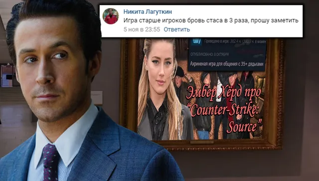
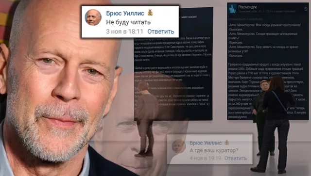

Ваши комментарии
ВКонтакте
🌀Что ж, вот и подходит неделя к своему завершению, встречайте долгожданную ежене…
8 ноября 2020 · №707 в выгрузке стены · оригинал во ВКонтакте ↗



#ВашиКомментарии@criticssteam #17
🌀Что ж, вот и подходит неделя к своему завершению, встречайте долгожданную еженедельную рубрику ваших комментариев, сегодня очень насыщенный выпуск, в связи с тем, что комментариев было действительно много, всем спасибо.
🏆 Титул [https://vk.com/@criticssteam-sistema-titulov|Комментатора] получают:
🏅[id347679904|Андрей Язин]
🏅[id119602395|Вова Адамов]
🏅[id12840761|Александр Лизунов]
🏅[id284440935|Никита Лагуткин]
🏅[id491132613|Брюс Уиллис]
🏅[id191917835|Глеб Иванов]
🌀Что ж, вот и подходит неделя к своему завершению, встречайте долгожданную еженедельную рубрику ваших комментариев, сегодня очень насыщенный выпуск, в связи с тем, что комментариев было действительно много, всем спасибо.
🏆 Титул [https://vk.com/@criticssteam-sistema-titulov|Комментатора] получают:
🏅[id347679904|Андрей Язин]
🏅[id119602395|Вова Адамов]
🏅[id12840761|Александр Лизунов]
🏅[id284440935|Никита Лагуткин]
🏅[id491132613|Брюс Уиллис]
🏅[id191917835|Глеб Иванов]